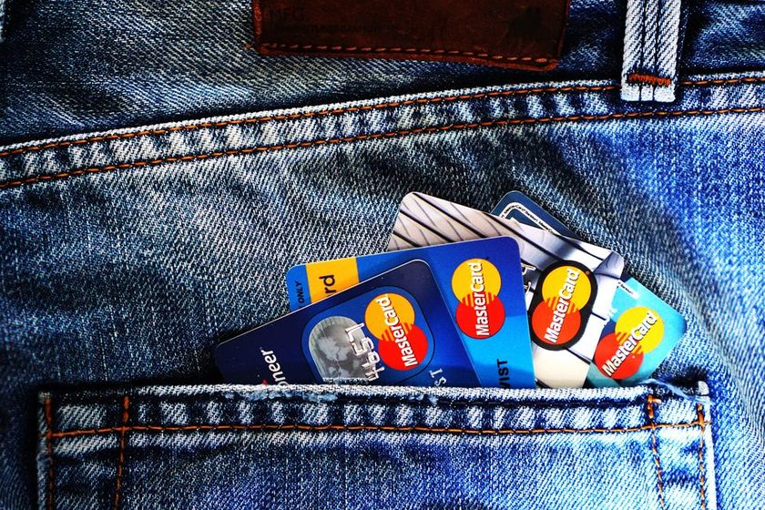

Score de crédito: como ele é calculado e o que realmente melhora a sua nota
Muita lenda circula por aí. Separamos o que pesa de verdade do que é mito na sua pontuação.

- Score é uma estimativa da chance de você pagar em dia — não uma nota de valor sobre a pessoa.
- O que mais pesa é o histórico de pagamentos, o uso do limite do cartão e o tempo e a atualização do seu cadastro.
- Não existe truque de subir score da noite pro dia. Quem promete isso quase sempre está vendendo algo (ou aplicando golpe).
Você abriu o app do banco, viu aquele numerozinho de três dígitos e o coração acelerou. Se ele subiu, veio o alívio; se caiu, bateu a angústia — e a busca imediata por "como aumentar score rápido". Antes de cair em qualquer promessa milagrosa, respira. O score de crédito é bem mais simples (e bem menos assustador) do que parece. Neste texto a gente separa o que realmente move a agulha do que é pura lenda de internet.
O que é o score, afinal
Score de crédito é uma pontuação que estima a probabilidade de você pagar suas contas em dia nos próximos meses. As empresas que calculam essa nota (os birôs de crédito) olham o seu comportamento financeiro registrado e transformam isso num número, em geral numa faixa de 0 a 1000. Quanto mais alto, menor o risco que o mercado enxerga em te emprestar dinheiro.
Repare na palavra estimativa. O score não diz se você é uma pessoa boa, organizada ou responsável. Ele não sabe quanto você ganha, se você é honesto ou se está passando por um momento difícil. É um cálculo estatístico baseado em padrões — nada mais. Uma nota baixa não é uma sentença sobre o seu caráter; é só um retrato de um momento, e retratos mudam.
Score não é uma prova final que você tira uma vez na vida. É mais parecido com a temperatura do dia: reflete a situação agora e muda conforme seus hábitos mudam. Bons hábitos repetidos aquecem a nota aos poucos.
O que costuma pesar de verdade
Cada birô tem sua própria fórmula, e os detalhes são fechados. Mas, de modo geral, alguns fatores aparecem sempre como os mais influentes:
1. Histórico de pagamentos
É o campeão. Pagar contas, faturas e parcelas em dia é o que mais constrói uma boa pontuação ao longo do tempo. Atrasos, negativações e dívidas em aberto puxam a nota pra baixo. Um deslize pontual não é o fim do mundo, mas o padrão de comportamento repetido é o que mais conta.
2. Uso do limite do cartão de crédito
Não é só pagar a fatura — é quanto do limite você costuma usar. Viver sempre estourando ou muito perto do teto do cartão sinaliza dependência do crédito. A ideia geral é usar uma fatia confortável do limite e deixar folga. Se o seu orçamento anda apertado por causa do cartão, vale revisar as contas com um método simples, como o método 50-30-20, pra reequilibrar o mês.
3. Tempo e atualização do cadastro
Relacionamentos mais antigos com o mercado de crédito e um cadastro atualizado (CPF regular, dados de contato corretos) ajudam. Cadastro desatualizado ou vazio dá pouca informação pro modelo trabalhar — e menos informação positiva costuma significar nota mais tímida.
4. Consultas e comportamento recente
Buscar muito crédito num intervalo curto de tempo (várias solicitações de cartão ou empréstimo em poucas semanas) pode ser lido como sinal de aperto financeiro. Não é que uma consulta destrua sua nota — é o excesso concentrado que acende um alerta.
📌 IMPORTANTE
Consultar o seu próprio score, quantas vezes quiser, não derruba a nota. Esse é um dos mitos mais teimosos que existem — e ele faz muita gente deixar de acompanhar a própria situação por medo bobo.
Mito x fato: a tabela que resolve as dúvidas
Se você já ouviu alguma dessas frases num grupo de família ou num vídeo de "segredos do score", esta tabela é pra você:
| O que dizem por aí (mito) | O que faz sentido (fato) |
|---|---|
| "Ter muito dinheiro parado na conta faz o score subir." | O saldo da sua conta não é o foco do cálculo. O que pesa é o seu comportamento com crédito e o pagamento em dia, não quanto você tem guardado. |
| "Consultar meu próprio score derruba a nota." | Consultar a sua pontuação é gratuito e não afeta em nada. Acompanhar de perto é saudável. |
| "Existe um truque pra elevar o score da noite pro dia." | Score se constrói com tempo e constância. Qualquer promessa de resultado instantâneo é propaganda enganosa — ou golpe. |
| "Nunca usar crédito deixa meu score altíssimo." | Sem histórico, o modelo tem pouca informação positiva. Usar crédito com responsabilidade tende a ajudar mais do que fugir dele. |
| "Se eu pago em dia, o score sobe na hora." | O efeito positivo existe, mas aparece de forma gradual, ao longo de meses de bom comportamento. |
Cuidado com quem promete milagre
Sempre que aparece um assunto que mexe com a esperança das pessoas, aparecem também os oportunistas. "Aumento seu score em 24 horas", "limpo seu nome garantido", "método secreto que os bancos não querem que você saiba". Desconfie de tudo isso.
Não existe atalho mágico, e algumas dessas ofertas são porta de entrada pra fraudes: pedem um pagamento adiantado, seus dados sensíveis ou até acesso ao seu app do banco. Se alguém te procurar por PIX, WhatsApp ou ligação prometendo "resolver seu score", trate como sinal vermelho. Vale a pena conhecer também os golpes financeiros mais comuns pra reconhecer o padrão antes de cair.
A regra de bolso é simples: se a promessa é rápida demais, garantida demais e pede dinheiro ou dados na frente, provavelmente é furada. Melhoria de score de verdade é chata, lenta e de graça.
Hábitos que melhoram a nota ao longo do tempo
A boa notícia: o que funciona é acessível pra todo mundo e não custa nada além de organização. Aqui vai o que realmente ajuda, com paciência:
- Pague as contas em dia. Se possível, automatize os vencimentos pra não depender da memória. O Pix Automático pode ajudar a não esquecer cobranças recorrentes.
- Mantenha o cartão sob controle. Use uma parte confortável do limite e evite viver no teto todo mês.
- Atualize seu cadastro. CPF regular e dados de contato corretos nos birôs dão mais material positivo pro cálculo.
- Quite dívidas antigas. Negociar e sair da negativação costuma ser um dos passos que mais destravam a nota com o tempo.
- Evite pedir crédito em rajada. Espalhe as solicitações e só busque o que realmente precisa.
- Tenha uma folga financeira. Uma reserva de emergência evita que um imprevisto te empurre pra um atraso — e é o atraso que machuca o score.
🧭 NA PRÁTICA
Acompanhar contas e vencimentos num só lugar ajuda a não deixar nenhuma cobrança passar. É pra isso que existe o app Conta Certa: organizar o mês, avisar dos vencimentos e te dar clareza sobre pra onde o dinheiro está indo — sem promessa de milagre, só rotina bem cuidada.
Então, quanto tempo leva?
Não tem um prazo fixo, e quem promete um está mentindo. A melhora aparece na medida em que os bons hábitos se repetem e o histórico negativo vai ficando pra trás. Pode levar alguns meses pra você ver a nota reagir de forma consistente — e tudo bem. O objetivo não é caçar um número; é ter uma vida financeira saudável, e o score é só o reflexo disso.
Conclusão
Score de crédito não é um veredito sobre quem você é, e não existe botão secreto pra fazê-lo disparar. É uma estimativa de risco que responde, com calma, aos seus hábitos: pagar em dia, usar o cartão com equilíbrio, manter o cadastro em ordem e fugir de dívidas em aberto. Faça o simples de forma constante e a nota vem — sem susto, sem atalho e sem cair em promessa de milagre.
Quer entender os termos que aparecem no meio do caminho? Dê uma olhada no verbete de score no nosso glossário e nos outros conceitos de crédito por lá.